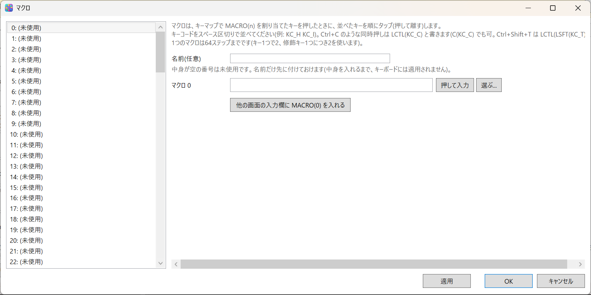
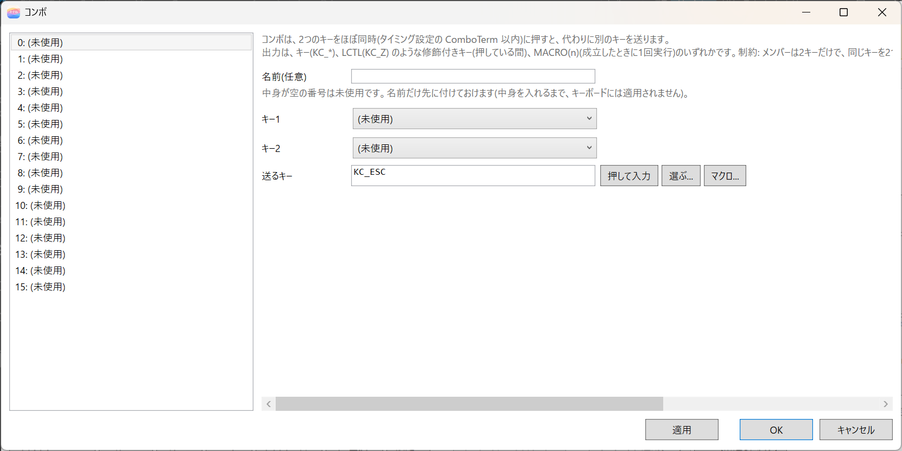
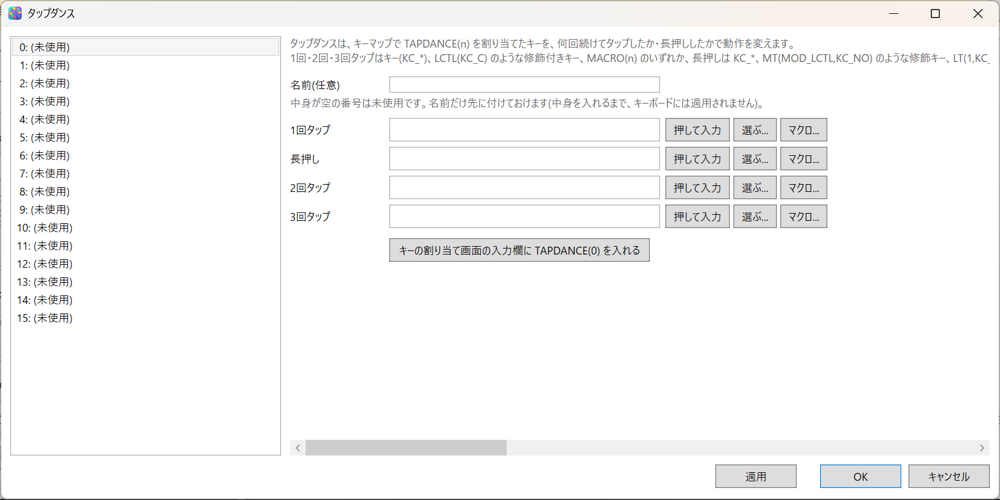
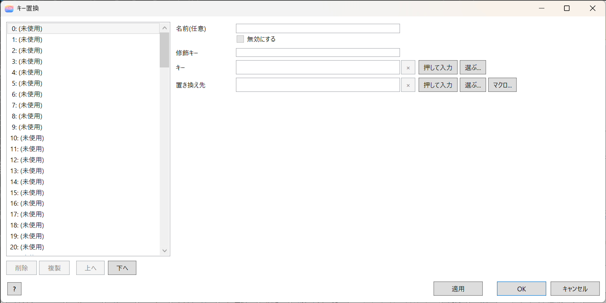

9. Macros, Combos, Tap Dances and Key Overrides
With Macros..., Combos..., Tap dances..., and Key overrides... at the bottom of the editor window, you make more complex actions. These four kinds of actions are processed by the driver, so they work even when the tray is not running.
| Feature | Contents |
|---|---|
| Macro | Types a sequence of keys in order. Up to 128 (0 to 127). One macro can have up to 64 steps |
| Combo | Sends another key when two keys are pressed together. Up to 16 |
| Tap dance | Changes the action by the number of taps or a long press. Up to 16 (0 to 15) |
| Key override | Replaces a combination of modifiers and a key with another key or action. Up to 128 (0 to 127) |
In the "Features" tab of the settings dialog, you can turn off features you do not use (13. Settings Dialog). Even if you turn one off, the contents of the definitions are not deleted.
You can also start from a key in the keyboard diagram. With Combo, Key override, and Macro / Tap dance in the key assignment window, or with the key's right-click menu, you can open the definitions that involve that key, or make a definition that includes that key (8. Assigning Keys).
Operations common to the editing windows
All four editing windows can be kept open at the same time. The windows open slightly offset from each other. If you try to open the same window again, the one that is open comes to the front.
The buttons at the bottom of a window are, from the left, as follows.
| Button | Contents |
|---|---|
| Apply | Reflects the changes in the project without closing the window |
| OK | Reflects the changes and closes |
| Cancel | Closes without reflecting. Esc does the same |
If you close without pressing Apply or OK, the edits in that window are discarded. To send the changes to the keyboard, press Apply to keyboard (ON) in the editor afterward.
The list on the left shows the definitions in the form number: name — contents. In the Name (optional) box at the top of the right side, you can give an easy-to-recognize name. The name is used only in the display and in exported files, and has nothing to do with how it works. You can put just a name on a number whose contents are empty. A number with only a name stays unused, and is not applied to the keyboard until you put contents in it.
Press × at the right of a key code box to empty that box.
Deleting, duplicating, and reordering
The buttons below the list act on the number shown on the right. None of them go into the project until you press Apply or OK.
| Button | Contents |
|---|---|
| Delete | Removes the contents and the name and makes it unused again. A confirmation appears |
| Duplicate | Copies the contents and the name to an unused number. " (copy)" is added to the name |
| Up, Down | Swaps with the previous or next number. Combos and key overrides only |
- Macros and tap dances are assigned to keys by number as
MACRO(n)andTAPDANCE(n), so their numbers cannot be moved. Even if you delete one, the later numbers are not closed up. The reorder buttons do not appear either. - Combos and key overrides are not used by number from anywhere else, so when you delete one, the later numbers move up by one. Key overrides are matched starting from the smallest number, so you can change which takes priority by reordering.
- A duplicated combo uses the same keys as the original, so it is disabled. Change the keys, then clear the Disable check.
When you delete a macro or tap dance, if there are places that use that number, a list appears in the confirmation. What is checked is all layers of the keymap, the outputs of combos, each box of tap dances, and the replacements of key overrides. If you leave Also remove it where it is used (on by default) as it is, they are removed as follows.
| Where it is used | How it is removed |
|---|---|
| A key assignment | Goes back to ▽ (transparent). On layer 0, the key works as its legend |
| A tap dance box | Becomes empty (no action). A tap dance whose four boxes are all empty becomes unused |
| The output of a combo, the replacement of a key override | That definition is disabled (its contents are kept) |
If you clear the check, the places that use it stay as they are, and pressing that key does nothing. Deleting a helper action uses the same confirmation (11. Helper Actions and Per-App Layers).
Disabling a definition
When you want to keep what you wrote but not apply it to the keyboard, check Disable on the right. The row in the list shows [Off]. If you clear the check, it is applied again.
- When you press Apply to keyboard (ON), disabled definitions are not sent to the keyboard. A definition that is already on the keyboard is removed.
- The contents of a disabled definition are not validated. Even half-written, it does not stop applying. It is validated when you clear the check.
- You cannot check it on a number whose contents are empty.
- If a disabled macro or tap dance is used from a key assignment (
MACRO(n),TAPDANCE(n)) or from a combo's output, you are told "it is disabled" when you apply. Pressing that key does nothing. - The keys of a disabled combo can be used in other combos.
- The buttons at the bottom of the editor also show the number of disabled ones (
Macros(2・1 off)...). Disabled combos and key overrides do not get the C and R marks in the keyboard diagram. - The disabled setting stays in the settings file and in exported files. If you read the settings back from the driver, definitions that were disabled do not come back (because they are not in the driver).
Macros
With Macros..., you make a sequence of keys to type in order. A macro you made runs when you assign MACRO(n) to a key.

- In the macro contents box, line up key codes separated by spaces (for example,
KC_H KC_I). You can also write keys with modifiers, such asLCTL(KC_C)(C(KC_C)is the same; Ctrl+Shift+T isLCTL(LSFT(KC_T))). - One macro can have up to 64 steps. One key uses 2 steps, and each modifier uses 2 more steps.
- Press to enter keeps capturing. Each key you press is added after the previous key, with a space between. Esc, or pressing the button again, ends it.
- Pick... adds to the end of the box with Add. You can keep choosing with the window open. End with Close.
Putting in MACRO(n)
You can put in MACRO(n) without typing the number.
- Press Macro... to the right of an input box that can take
MACRO(n)(a combo's "Output key", each tap and the hold of a tap dance, the replacement of a key override), and a list of "number: name — contents" appears. When you choose one,MACRO(n)goes in. - Another way: keep the macro window open, click once in the input box you want to fill in another window, and double-click a row of the list in the macro window. The button Insert MACRO(n) into the field in the other window does the same. It goes into the input box you clicked last.
- There are two aids so that you do not forget to put it in. When you changed the macro's contents and have not put it in yet (you clicked the target input box, and that box does not contain
MACRO(n)), the Insert MACRO(n) into the field in the other window button stands out in bold and in color. If you press OK in that state, you are asked whether to put it in before closing. Yes puts it in and closes, No closes without putting it in, and Cancel goes back without closing. The same goes forTAPDANCE(n)in the tap dance window.
Combos
With Combos..., you assign another key to a simultaneous press of two keys.

- Choose Key 1 and Key 2 from the list. Only two keys can be the target of a simultaneous press.
- One key can be used in only one combo. The keys of a disabled combo can be used in other combos.
- Combos act on physical keys, so they work the same on every layer.
- For Output key, besides an ordinary key, you can specify a key with modifiers such as
LCTL(KC_Z)(while held), orMACRO(n)(once when the combo is recognized). - The keys that are the target of a combo get a C mark in the keyboard diagram.
- The time within which presses count as simultaneous (ComboTerm) can be changed in the "Timing" tab of the settings dialog.
Tap dances
With Tap dances..., you assign a different action to each of Single tap, Hold, Double tap, and Triple tap. Each box has the buttons Press to enter, Pick..., and Macro... at its right. A tap dance you made runs when you assign TAPDANCE(n) to a key.

- For the single, double, and triple taps, besides an ordinary key, you can specify a key with modifiers such as
LCTL(KC_C), orMACRO(n). - For the hold, you can specify a modifier such as
MT(MOD_LCTL,KC_NO), a layer such asLT(1,KC_NO), and also a key with modifiers (while held),LM(1,MOD_LCTL), andMACRO(n)(once when the hold is recognized). The tap-side key ofMTandLTis not used. - A box left empty (or
KC_NO) means "no action". Nothing happens for that number of taps or that hold. If you empty all four boxes, that number becomes unused. - The tap interval and the time for detecting a hold (TapDanceTerm) can be changed in the "Timing" tab of the settings dialog.
- In the tap dance window too, double-clicking a row of the list (or the button Insert TAPDANCE(n) into the key assignment field) puts
TAPDANCE(n)into the key code box of the key assignment window.TAPDANCE(n)is an action you assign to a key, so the only place to put it is the key code box of the key assignment window.
Key overrides
With Key overrides..., you replace a combination of modifiers and a key with another key. You enter three things: Modifiers, Key, and Replace with. For the modifiers, you can write several, like MOD_LCTL|MOD_LSFT. You can also enter them with the Shift, Alt, Ctrl, and Win check boxes at the right of the box (the check boxes and the box are linked: checking adds the left-side modifier, and clearing removes both the left and the right). The replacement happens when all of them are held (left and right are not distinguished).

| Example | Setting | Result |
|---|---|---|
| Make Shift+BS into Delete | Modifiers MOD_LSFT, key KC_BSPACE, replace with KC_DELETE |
Shift+BS becomes Delete |
| Use a keyboard with US legends on Windows set to JIS | Modifiers MOD_LSFT, key KC_2, replace with KC_LBRC |
Shift+2 gives @ |
- Key is compared using the key that comes out after layer switching. If you empty all three boxes, that number becomes unused.
- While the replacement is in effect, the condition's modifiers are temporarily released. If you write something like
LSFT(KC_X)as the replacement, that modifier is applied. - You can also specify
MACRO(n)as the replacement. It runs the macro once when the key is pressed (only when the macro feature is ON). If you check Repeat the macro while the key is held, it repeats with each auto-repeat. - As the replacement, you can also specify layer actions (
OSL(n),TG(n),TO(n),DF(n)), helper actions (HLP(n)), and mark mode (MARK(on),MARK(off),MARK(toggle)). No key is sent, and it is handled the same as when you put the same action in a key assignment. The condition's modifiers are not released. Example: if you make Ctrl+X intoOSL(1), only the next one key you press uses the assignment of layer 1. MARK(on)enters Emacs-style mark mode (MARK(off)ends it, andMARK(toggle)switches). While it is on, the movement keys (←↑→↓, Home, End, PageUp, PageDown) get Shift, and the selection grows with each movement. If you press a key other than a movement key or a modifier, it ends after sending that key. It also ends when the foreground window changes (while the tray is running). Example: make Ctrl+SpaceMARK(on).- If you put a key with modifiers such as
LCTL(KC_S)on the layer you switched to withOSL(n)or the like, the output key (Ctrl+S in this example) may hit another key override. To avoid that, assignMACRO(n)to that key. MO(n),LT(n, kc),KC_NO, and the like cannot be used as a replacement.- With an old driver (one that supports only 32 key overrides), the 33rd and later, and replacements that are layer actions or helper actions, are not applied.
Example: run a macro with Ctrl+F1
It is processed by the driver, so it works even when the tray is not running.
- With Macros..., make a macro with the contents you want (for example, macro 0).
- In the "Features" tab of Settings..., check that macros and key overrides are ON.
- Open Key overrides..., specify
MOD_LCTLas the modifier,KC_F1as the key, andMACRO(0)as the replacement, and press OK. - Press Apply to keyboard (ON).
- When you press Ctrl+F1, macro 0 runs once. Ctrl+F1 itself does not reach the app.
Only during the run, the Ctrl you are holding is released from the OS, and if you are still holding it when it ends, it is put back. This is so that Ctrl is not applied to the macro's output. If you want to use Ctrl inside the macro, write it in the macro's contents, like LCTL(KC_C).
When Alt or Win is the condition, a Ctrl tap is inserted in between so that the menu or Start does not open.
If you keep holding the key, the macro does not repeat by default. If you want it to repeat, check Repeat the macro while the key is held, which appears when the replacement is MACRO(n).
When the macro feature is OFF, this replacement does not work, and Ctrl+F1 reaches the app as it is.
If you want to run a procedure that includes strings, waits (delays), or mouse operations with Ctrl+F1 in the same way, use a helper action trigger (11. Helper Actions and Per-App Layers). However, the tray must be running.